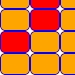

Вместо увод
Здравейте и добре дошли в ganev.bg. Това е моето лично портфолио.
Надявам се част от написаното или представеното тук да Ви привлече вниманието,
а защо не и да започнете да използвате някой от сайтовете? Те са готини!
Приятно разглеждане! :-)
Кой съм аз?
Студент III. курс, специалност Информационни системи в СУ, работя и като Web developer в
Резон ООД.
С други думи - пиша сайтове. Работя по големи и интересни проекти в екип с умни хора. Най-новият ни проект няма как
да пропуснете, защото само тук е споменат на около двадесетина места. :-)
Още за мен
Проекти
Не мога да се оплача от липса на такива. Разработвам интересни сайтове, които са не само предизвикателство
за мен, а и развиват уменията ми и начина на мислене. Мисленето е доста важна част от определението за програмист.
Вижте проектите ми - може някой от тях да Ви хареса! :-)
Виж проектите
За връзка
Преди всичко (и с малко рекламна цел) можете да ме намерите в
Probook,
използвайки следния линк -
http://probook.bg/profile/v.
Ако просто имате въпрос или желание да притежавате собствен website, не се колебайте да ме потърсите.
Връзка с мен
Какво мога
За тези няколко години, в които се занимавам с уеб програмиране, съм придобил следните умения:
xHTML / CSS
PHP, JavaScript
MySQL, PostgreSQL, DB2
Работил съм по големи проекти както в екип, така и сам. Наясно съм, че хубавите неща стават бавно и трудно,
затова предпочитам работата в екип.
В момента уча Perl и Objective-C.
Web програмист
Като web програмист пиша сайтове на php. Интересни проекти, занимателни. Хубавото е, че и хората ги харесват.
На мен също много ми харесва да измислям как да станат нещата. А и след това виждаш резултата от труда си. Ако не ти
хареса - вадиш си изводи и продължаваш напред!
Мрежор
Работих като такъв около половин година. В момента се отдавам на другата ми страст, за която стана дума по-горе.
Думата мрежор сама по себе си е интересна. Повечето хора не са много наясно какво е това, но след като им кажеш
"Оправям интернета на хората." им става долу-горе ясно. Всъщност работата е по-готина от колкото изглежда.
Обикновено женската част имат проблеми с интернета. Как все техният интернет прави проблеми - не знам!
Моите проекти
Не мога да се оплача от липса на такива. Част съм от много добър екип. Разработваме интересни сайтове,
предизвикателство за мен. На кратко ще предложа на Вашето внимание последния ни проект Probook и няколко по-стари
сайта, писани от мен (в екип). Надявам се да Ви харесат. Можете също така да погледнете проектите на
tzappa - на бас, че ще се заиграете в
igrivi.com.
PROBOOK.bg - професионална мрежа
Свържете се с бъдещите си работодатели и бизнес партньори.
Хиляди българи използват probook, за да поддържат професионалните си връзки с техни приятели,
бивши и настоящи колеги, работодатели, фирми за подбор на персонал и т.н.
Революцията в търсенето на работа вече е в България! Възползвайте се!
Към probook.bg
MOJO.bg - музикална социална мрежа
В mojo.bg Вие сте DJ в собствения си виртуален mojo club! Bъв Вашия mojo клуб Вие сте оператор на видео чата и едновременно с това
DJ, който пуска музиката в клуба от собствения си компютър. Към момента mojo има над 1200 регистрирани потребителя и над 300 клуба.
Има създадена игра със снимки, качвани от потребителите, и скоро ще бъде пусната играта в клубовете - с награди! ;-)
Към mojo.bg
GEEK.bg - wikipedia-та за бяла техника
Geek.bg е сайт, който предоставя съвети при покупка на техника. В сайта има потребителски ревюта. Нещата, които трябва да знаете при
избора на нов телевизор, хладилник, готварски плот, пералня... Помощ при сервизирането и избирането на модел. Как да сметнем с кой
климатик каква сметка за ток да очакваме и как се смята изразходваната енергия?
Виж на geek.bg
JUMPERS.ganev.bg - за десерт една моя игричка

Няма какво да Ви обяснявам за нея - направо я вижте.
Ако победите първия път - пуснете си
medium нивото. Успех!
Виж на jumpers.ganev.bg
Probook
е първата (към този момент и единствена) българска професионална мрежа! Станете част от професионалистите в България!
Към Probook
{kind=link}
{kind=link}
{kind=link}
{kind=link}
{kind=link}
{kind=link}
{kind=link}
{kind=link}
{kind=link}
{kind=link}